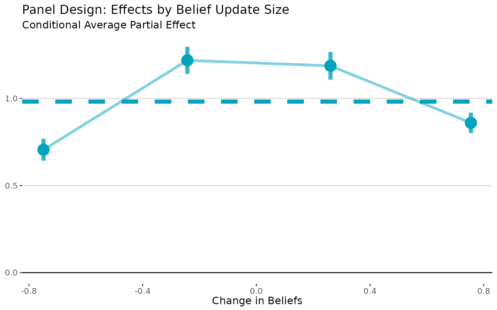
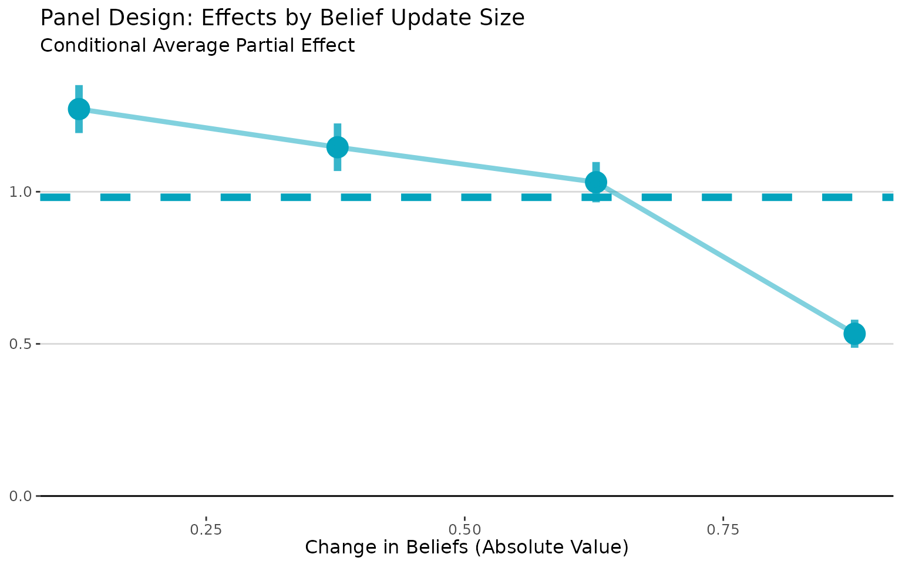
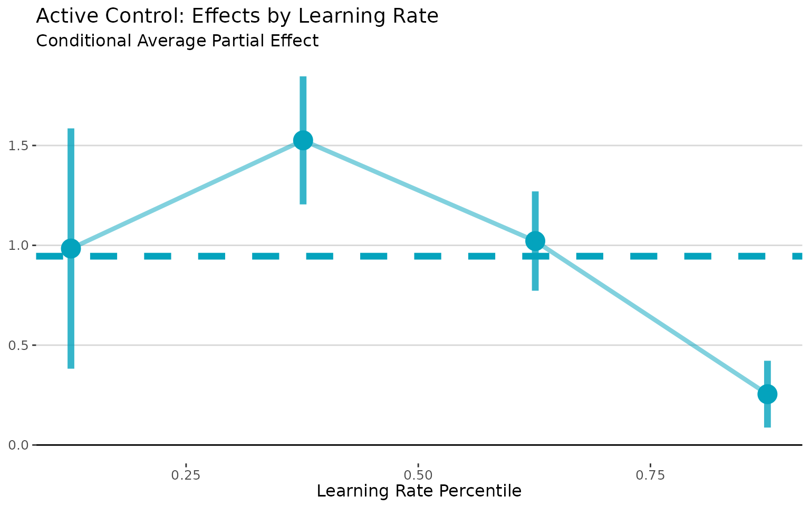
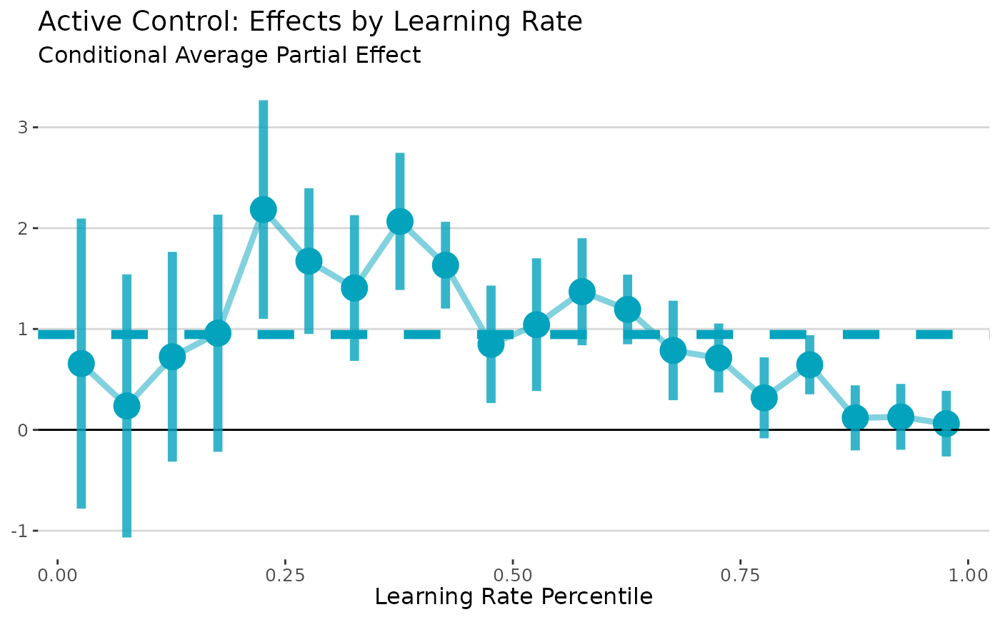
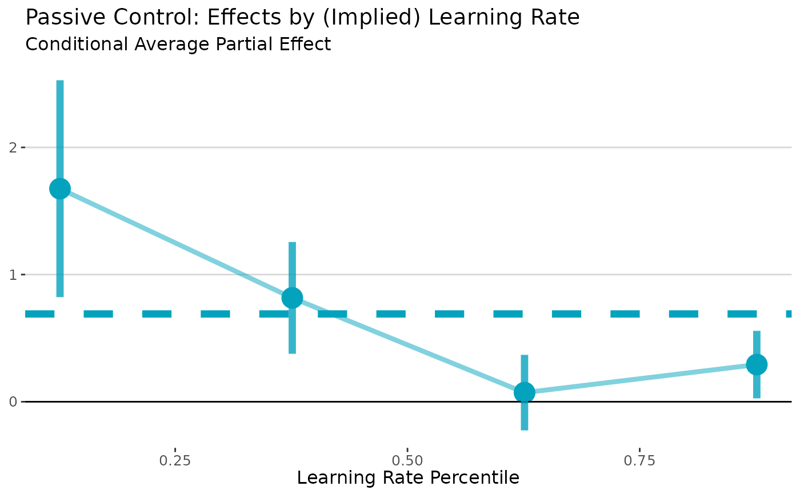

User's Guide
A User’s Guide to Local Least Squares in Information Provision Experiments
Source:vignettes/articles/Intro-to-LLS.Rmd
Intro-to-LLS.RmdThis R package implements the estimator proposed in Identifying Causal Effects in Information Provision Experiments.
The package handles the multi-step estimation process, including bootstrap inference. It also provides a simple wrapper to visualize the CAPE curve, like in the paper. There are lots of options to customize estimation (and you should experiment with them), but the package also provides sensible defaults to get you started quickly.
Implementation Guide
Simulation Setup
To get started, let’s simulate some data. We’ll design a simulation where people with larger belief effects (higher values of ) have smaller belief updates (lower values of ).1 This will make the plots here look like the ones in the paper.
# Simulate data for active control design
set.seed(617)
n <- 500
# True APE is 1 - this is what we want to recover
tau <- runif(n)
tau <- tau / mean(tau) # Normalize so mean is 1
# Make learning rates negatively correlated with belief effects
# People with high tau (big belief effects) have low alpha (small updates)
alpha <- 1 / (tau^2 + 1)
sigma2 <- 1 / (0.5 * tau + 1)
# Introduce endogeneity that affects both priors and outcomes
V <- rnorm(n)
U <- V + rnorm(n)
# Generate the experimental data
dt <- data.table(
tau = tau,
alpha = alpha,
Z = runif(n) > 0.5 # Random treatment assignment
)
dt[, signal := ifelse(Z, 1, -1)] # High vs low signal
dt[, prior := V + sqrt(sigma2) * rnorm(n) / 5]
dt[, posterior := alpha * (signal - prior) + prior] # Bayesian updating
dt[, Y := tau * posterior + U] # Outcome equation
dt[, Y0 := tau * prior + U] # Counterfactual outcome (in panel, this would be before treatment)
# for panel designs, use changes
dt[, dX := posterior - prior] # Change in beliefs
dt[, dY := Y - Y0] # Change in outcomesPanel Experiments
Panel designs observe beliefs and actions for same people before and after information provision. The standard approach is to regress the change in outcomes on the change in beliefs.2
In these settings, the LLS estimator is a perfect drop-in replacement that doesn’t require any additional assumptions.
The lls command will estimate the CAPE curve conditional
on the belief updates, which we directly observe in the data. Then,
post-estimation commands can be used to access the CAPE curve
(plot) and the unweighted average partial effect (APE) and
standard errors (print).
Importantly, the lls command expects to receive the data
in changes, not as a panel with two observations per person. The syntax
is simple:
# Panel LLS using observed changes
panel_lls <- panel.lls(
dat = dt,
dx = "dX", # Observed belief change
dy = "dY", # Observed outcome change
bootstrap = TRUE,
bootstrap.n = 200
)
# Visualize how effects vary with belief updating
plot(panel_lls) +
# plot returns a ggplot object, so we can customize it
labs(title = "Panel Design: Effects by Belief Update Size",
x = "Change in Beliefs",
y = "",
subtitle = "Conditional Average Partial Effect")
Sometimes, it’s useful to visualize the CAPE curve with the absolute
value of the belief changes on the x-axis. In this case, it makes the
attenuation bias more apparent, as it shows how effects vary with the
size of belief updates regardless of direction. We can do that with the
abs.x = TRUE argument:
# Visualize how effects vary with belief updating
plot(panel_lls, abs.x= TRUE) +
labs(title = "Panel Design: Effects by Belief Update Size",
x = "Change in Beliefs (Absolute Value)",
y = "",
subtitle = "Conditional Average Partial Effect")
The plot command returns a ggplot object,
so I was able to customize the plot using standard ggplot2
commands.3
Finally, we can get the APE and standard errors by printing the
lls return object.
print(panel_lls)## Local Least Squares (LLS) Estimation
## ====================================
##
## Average Partial Effect (APE):
## Estimate: 0.9817
## Std. Err: 0.0258
## t-value: 38.0006
## p-value: <0.001
##
## Normal CI (95%): [ 0.9311, 1.0324]
## Percentile CI (95%): [ 0.9289, 1.0287]
##
## Estimation Details:
## Bandwidth: 0.0500
## Bootstrap reps: 200
## Observations: 500
## Support points: 500Active Control Experiments
Active control experiments compare people who receive “high” vs. “low” signals.
The standard apparoach to analyze these experiments is to use
assignment to (for example) the high signal as an instrument for
posterior beliefs. The lls estimator is justified in this
setting under a Bayesian updating assumption.4
When see how people update their beliefs based on these signals, this behavior “reveals” their learning rates. Then, we estimate the CAPE curve conditional on the learning rates and aggregate.
Inferring the Learning Rate from the Observed Update
Bayesian updating implies that the posterior is the prior plus the learning rate times the difference between the signal and the prior:
Since we know the prior and the signal, we can rearrange this to calculate . Once we’ve done that, we pass that directly tollsas therargument; the local regressions will then be estimated condition on the variable we pass tor.
# Calculate learning rates from observed updating
dt[, alpha_est := (posterior - prior) / (signal - prior)]
# LLS for active control
active_lls <- iv.lls(
dat = dt,
y = "Y",
x = "posterior",
r = "alpha_est",
control.fml = "prior",
bootstrap = TRUE
)
# Plot conditional effects by learning rate
plot(active_lls) +
labs(title = "Active Control: Effects by Learning Rate",
x = "Learning Rate Percentile",
y = "",
subtitle = "Conditional Average Partial Effect")
Let’s try taking a more detailed look at the CAPE curve. We aggregated the binned estimates after estimation. That makes it very easy to change the number of bins, since we don’t have to redo the bootstrapping.
# Plot conditional effects by learning rate
plot(active_lls, nbins = 20) +
labs(title = "Active Control: Effects by Learning Rate",
x = "Learning Rate Percentile",
y = "",
subtitle = "Conditional Average Partial Effect")
I think the first figure looks better! There’s a bias-variance tradeoff – more bins gives us more detail, but at the cost of (much) wider standard errors. That’s to be expected, though, since we’re using less and less data to estimate effects in each bin.
It’s important to understand that the nbins option only
controls how much to “smooth” in the visualization of the CAPE curve;
not how much smoothing is done in the underlying local regressions
(which is controlled by the bandwidth estimation option).
Notice that the horizonal line (the APE) is the same in both figures;
that is not affected by nbins (but will be
affected by the bandwidth).
Passive Control Experiments
Passive control experiments compare treated people to a “pure” control group that does not receive any new information.
The standard approach is to construct an “exposure instrument” and
use this an instrument for the posterior beliefs.5 As in active control
experiments, the lls estimator is justified in this setting
under a Bayesian updating assumption.
However, unlike in active control experiments, there is a control group that the researcher never observes update. In this case, we need to make an additional assumption that there are some additional control variables that we can use to predict the learning rate. One potentially attractive option is the variance of the prior belief. Under Bayesian updating, the learning rate is proportional to the variance of the prior belief.6 In this example, we assume that we know the variance of the prior beliefs. See the paper for more details on the various options and necessary assumptions in passive control designs.
# Create passive control data
dt_passive <- copy(dt)
dt_passive[Z == 0, posterior := prior] # Controls keep priors
dt_passive[, Y_passive := tau * posterior + rnorm(n)]
# Case 1: Use prior precision to infer learning rates
dt_passive[, prior_precision := 1 / (tau + 1)] # Higher tau → more precise priors
# Passive LLS (Case 1: observed prior variance)
passive_lls <- iv.lls(
dat = dt_passive,
x = "posterior",
y = "Y_passive",
r = "prior_precision",
control.fml = "prior",
bootstrap = TRUE,
bootstrap.n = 200
)
# Plot conditional effects by learning rate
plot(passive_lls) +
labs(title = "Passive Control: Effects by (Implied) Learning Rate",
x = "Learning Rate Percentile",
y = "",
subtitle = "Conditional Average Partial Effect")
Appendix: An Illustration of Attenuation Bias in TSLS and Panel Regressions
In this simulation, we made the learning rates (α) negatively correlated with the belief effects (τ). This will make the standard approaches underestimate the APE because it gives more weight to people who update their beliefs the most. The true APE is 1, and we expect TSLS to be too small. We can check this by running a simple TSLS regression:
# TSLS: biased downward due to correlation between alpha and tau
tsls <- feols(Y ~ 1 + prior | posterior ~ Z, data = dt)As expected, TSLS is biased because it weights individual effects by their belief updating, and people who update the most (high α) tend to have the smallest effects (low τ). In this simulation, the TSLS estimate is 0.757, which is significantly lower than the true APE of 1.
We can also run a panel (first-differences) regression.
# Panel regression: also biased downward
panel <- feols(dY ~ dX + prior, data = dt)The panel estimate of 0.41 is even more biased downward than the TSLS estimate.
If you use this code or the lls package in your work,
please cite the working paper (pdf) as
Balla-Elliott, Dylan (2025). “Identifying Causal Effects in Information Provision Experiments.” arXiv:2309.11387
For more information, visit dballaelliott.com.*